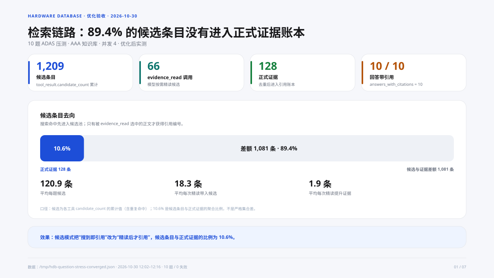
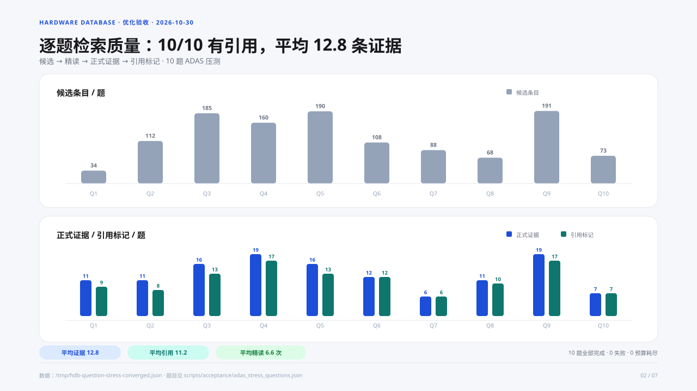
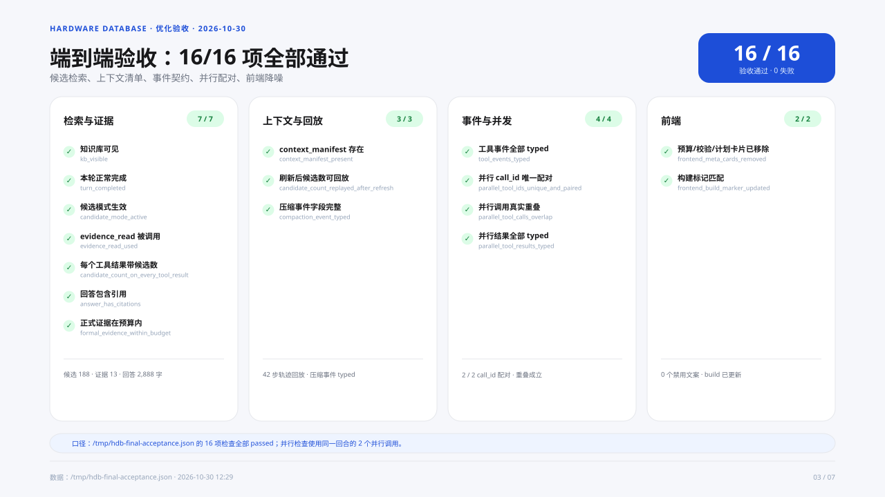
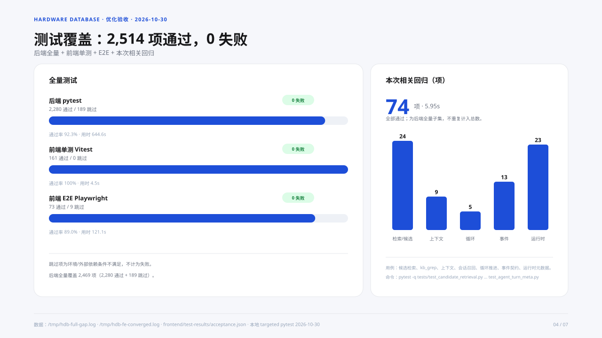
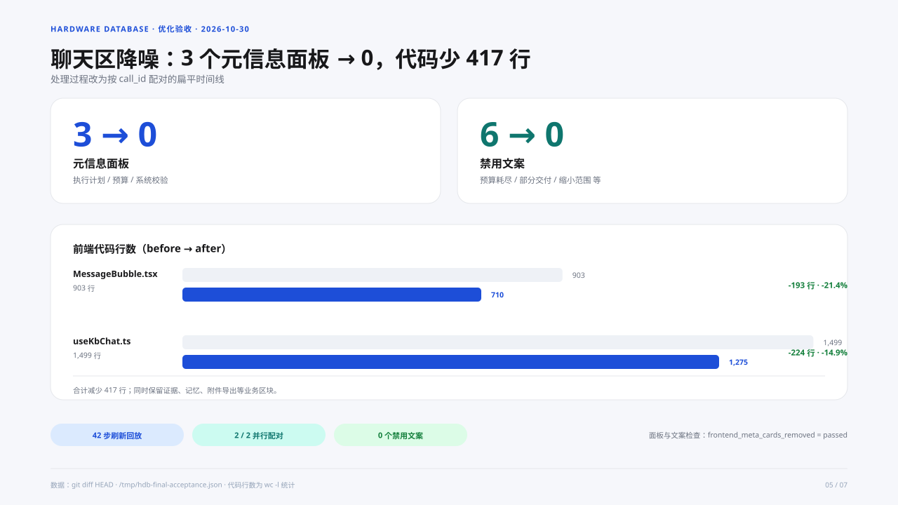
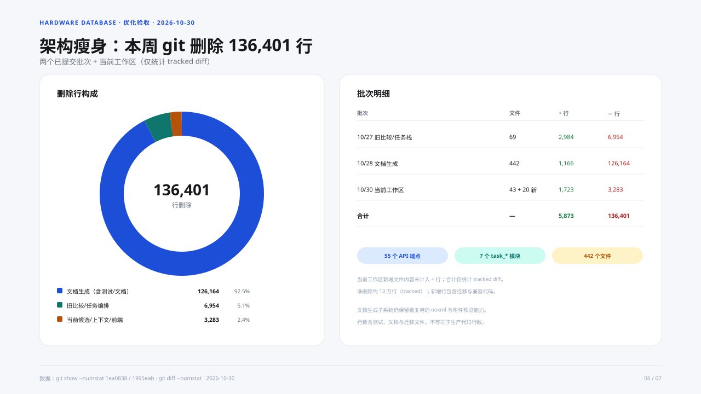
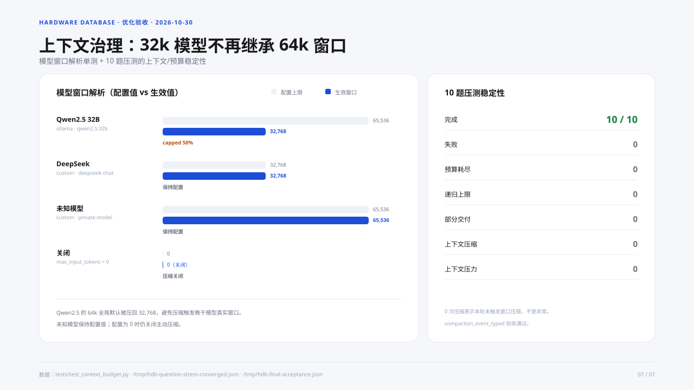

01 · 检索链路：候选条目没有进入正式证据账本
候选 1,209 / 精读 66 次 / 正式证据 128；候选与证据比例 10.6%。

02 · 逐题检索质量
10/10 有引用；平均 12.8 条证据、11.2 个引用、6.6 次 evidence_read。

03 · 端到端验收矩阵
16/16 项全部通过，覆盖检索、上下文、事件并发和前端降噪。

04 · 测试覆盖与通过率
2,514 项通过、0 失败；本次相关回归 74 项全部通过。

05 · 聊天区降噪
元信息面板 3→0、禁用文案 6→0、前端代码少 417 行。

06 · 架构瘦身
本周 git 删除 136,401 行；文档生成子系统占 92.5%。

07 · 上下文治理
Qwen2.5 的 64k 配置压回 32,768；10 题压测 0 失败、0 预算耗尽、0 上下文异常。
